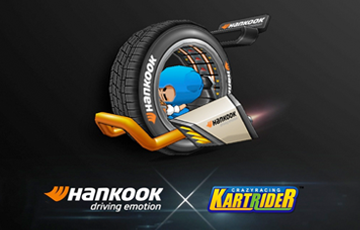
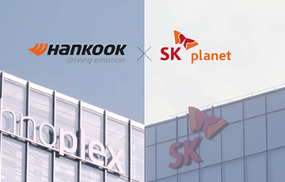
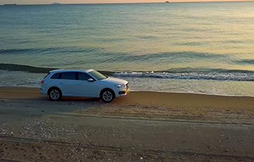
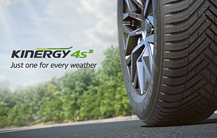

홍보영상
홍보영상
한국타이어앤테크놀로지가 전 세계에서 펼치는 커뮤니케이션 활동의 생생한 현장의 영상을 전해드립니다.
-
[Design Innovation] Hankooktire 디자인 이노베이션 2020
2040년의 세상은 어떻게 변할까요? 자율 주행, 인공 지능 등을 기반으로 모빌리티는 단순히 자동차에 국한된 영역이 아닌 우리가 가장 많은 시간을 보내는 가치 있는 삶의 요소 중 하나가 될 것입니다.
-
[한국타이어] 한국타이어 X 크레이지 레이싱 카트라이더
한국타이어와 카트라이더의 특별한 만남! 스페셜 콜라보 아이템 Ventus evo 카트를 즐겨보세요. 영상 속 Ventus evo 카트는 티스테이션닷컴에서 받으실 수 있습니다.
-
[한국타이어] 도로 위험 탐지 솔루션 (with SK planet)
도로의 위험 요소로 인해 발생할 수 있는 교통 사고를 방지하기 위해,한국타이어와 SK플래닛의 전문가들이 한자리에 모였습니다. 안전한 도로 환경을 만들기 위한 한국타이어와 SK 플래닛의 프로젝트를 직접 만나보세요.
-
[한국타이어] 테크노플렉스 (TVN 드라마 스타트업)
혁신과 수평적 문화를 담고 있는 한국타이어 본사 건물, '테크노플렉스(Technoplex)'! 인기리에 종영한 tvN 드라마 '스타트업'에서 달미(수지)와 도산(남주혁)의 청명 컴퍼니로 등장하게 되었습니다. 한국의 실리콘 밸리에서 성공을 꿈꾸며 스타트업에 뛰어든 청춘들은 과연 어떻게 되었을까요?
-
[한국타이어] Driving Emotion_15sec (with 29cm)
한국타이어는 최고의 기술력으로 드라이버와 자동차가 하나되는 일상 속 특별한 순간을 창조합니다. 트렌디한 온라인 셀렉트샵 29cm와 함께 담아낸, 한국타이어만의 '드라이빙 이모션'의 순간들을 직접 확인해보세요!
-
[한국타이어] 키너지 올 웨더 Kinergy 4S2
봄, 여름, 가을 그리고 겨울 4계절 날씨에 최적화된 전천후 타이어 일 년 내내 균형 잡힌 드라이빙을 체험해 보세요!
-
[한국타이어] Never Halfway_Long Catch
메이저리그의 선수가 보여주는 야구에 대한 순수한 열정은 'Driving Emotion'에 대한 한국타이어의 열정과 닮았습니다. MLB와 한국타이어가 공유하고 있는 끊임없는 열정과 도전정신, 영상을 통해 확인해보세요.
-

재생버튼
- [한국타이어] 한국타이어 X 크레이지 레이싱 카트라이더
- 한국타이어와 카트라이더의 특별한 만남! 스페셜 콜라보 아이템 Ventus evo 카트를 즐겨보세요.2021. 2. 4
-

재생버튼
- [한국타이어] 도로 위험 탐지 솔루션 (with SK planet)
- 도로의 위험 요소로 인해 발생할 수 있는 교통 사고를 방지하기 위해,한국타이어와 SK플래닛의 전문가들이 한자리에 모였습니다.2021. 1. 12
-
재생버튼
- [한국타이어] 테크노플렉스 (TVN 드라마 스타트업)
- 인기리에 종영한 tvN 드라마 '스타트업' 에서 달미(수지)와 도산(남주혁)의 청명 컴퍼니로 등장하게 되었습니다.2020. 12. 8
-

재생버튼
- [한국타이어] Driving Emotion_ 15sec (with 29cm)
- 트렌디한 온라인 셀렉트샵 29cm와 함께 담아낸, 한국타이어만의 '드라이빙 이모션'의 순간들을 직접 확인해보세요!2020. 11. 23
-

재생버튼
- [한국타이어] 키너지 올 웨더 Kinergy 4S2
- 봄, 여름, 가을 그리고 겨울 4계절 날씨에 최적화된 전천후 타이어일 년 내내 균형 잡힌 드라이빙을 체험해 보세요!2020. 9. 21
-
재생버튼
- [한국타이어] Never Halfway_ Long Catch
- 메이저리그의 선수가 보여주는 야구에 대한 순수한 열정은 'Driving Emotion'에 대한 한국타이어의 열정과 닮았습니다. 2020. 8. 6